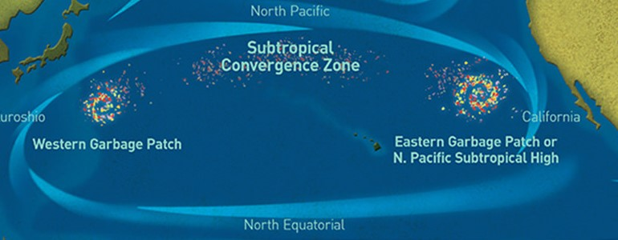
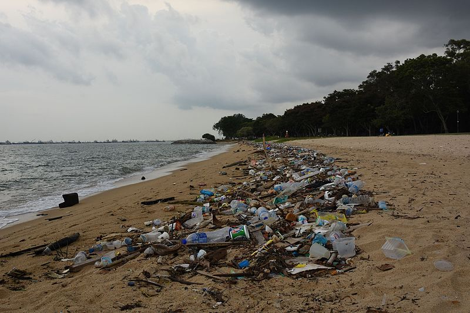

Luigi Lilio, 80
00142 Roma
Laurentina
parcolaudatosi@comboni.org

In pratica quindi, affinché esista un ecosistema è sufficiente che ci siano un’interdipendenza ed un equilibrio tra gli esseri viventi e tutto quello che li circonda, comprese tutte le componenti non viventi.
Un ecosistema per essere definito tale, deve avere delle
caratteristiche ben precise, ossia: • deve essere un sistema aperto (avere quindi scambi di qualche tipo con l’ambiente esterno);
• è interconnesso con altri ecosistemi;
• è formato da una componente abiotica (non vivente) e da una componente biotica (vivente);
• mantiene un equilibrio dinamico (c’è sempre un equilibrio in un ecosistema, ma questo non significa che non sia mutevole nel tempo).
La crisi climatica e ambientale, le crescenti disuguaglianze ed impoverimento di miliardi di persone, i conflitti e le violenze che causano tanta sofferenza, sono aspetti diversi di un’unica realtà globale, in cui tutto è connesso all’insieme.
Riscoprire il nostro legame vitale con la natura e con il resto dell’umanità è la base per invertire la rotta, trasformare la qualità della vita e approdare ad un mondo più equo e sostenibile.
In questo tempo difficile, siamo chiamati ad aver cura gli uni degli altri, a promuovere e difendere la vita umana e il Pianeta, ad offrire cure mediche adeguate per tutti, ad alimentare la solidarietà internazionale, a combattere la cultura dello scarto, a studiare, costruire insieme nuovi sistemi economici e finanziari più equi, a impegnarci per il dialogo, la pace, il rifiuto della violenza e della guerra. Di fronte alle sofferenze dei più poveri e allo sfruttamento della casa comune, non si può più assistere con indifferenza.
Gli esseri umani e la natura sono interconnessi in maniera inestricabile, ed ognuno di noi dipende per vivere dalle piante, dagli animali, e dai microorganismi che rivestono nell’ecosistema un ruolo essenziale. Per questo è vitale cercare un modo di raggiungere i cuori e le menti delle persone per creare una comprensione più profonda del significato della natura, e della perdita di biodiversità.


I sempre più evidenti cambiamenti climatici che sperimentiamo sono una conseguenza del riscaldamento globale indotto dall’accumulo di gas a effetto serra
(anidride carbonica, metano, ossido di diazoto, gas fluorurati e vapore acqueo), cresciuto vertiginosamente a partire dalla prima era industriale.Le cause principali sono l’utilizzo di combustibili fossili come il carbone e il petrolio, soprattutto legato all’utilizzo di energia e ai trasporti. Altra causa dell’incremento di gas serra nell’atmosfera è la deforestazione. In questo caso gli effetti sul clima vengono originati sia dalla perdita di patrimonio naturale, altrimenti in grado di contribuire all’assorbimento di CO2, sia dal frequente ricorso agli incendi per la rimozione degli alberi.
Un peso sempre più rilevante è quello legato all’alimentazione mondiale, anche in virtù del ricorso a metodi intensivi di coltivazione e allevamento. A preoccupare alcuni climatologi anche le emissioni di metano derivato dall’allevamento di bovini.
Tra le conseguenze più allarmanti del riscaldamento globale ci sono lo scioglimento dei ghiacciai, eventi meteorologici estremi, come alluvioni, inondazioni e grandinate; il dissesto idrogeologico; ondate di calore e periodi di forte siccità, esponendo a un maggiore rischio incendi (con la conseguente perdita di patrimonio naturale e di produzione di CO2).
Il significato del Green New Deal (un nuovo patto verde) è quello di risposta concreta all’emergenza dei cambiamenti climatici. Per la prima volta, una legge vincolante per tutti i Paesi UE ha sancito il raggiungimento della neutralità delle emissioni inquinanti entro il 2050.
Il progetto normativo ha lo scopo di favorire una transizione equa e giusta verso un’economia sostenibile e con impatto ambientale zero in tutti i Paesi membri. Si vuole realizzare una trasformazione equilibrata, che non lasci indietro nessun cittadino e regione del blocco UE. Nello specifico, si mira a decarbonizzare il settore energetico, che rappresenta il 75% delle emissioni inquinanti, trasformando tutto il sistema di produzione industriale.
Anche la mobilità dovrà essere ripensata in termini di sostenibilità. I trasporti sono responsabili per il 25% delle emissioni inquinanti nel continente. Infine, il progetto coinvolgerà anche l’edilizia, favorendo la costruzione di nuovi edifici abitativi e la manutenzione di quelli esistenti in un’ottica di risparmio energetico.
Per rendere davvero concreto l’obiettivo della neutralità climatica nel 2050, sarà necessario avviare un complesso piano di investimenti di 1.000 miliardi di euro in 10 anni. Saranno attivati diversi fondi, necessari alle varie regioni europee per iniziare la riconversione economica, produttiva e del mondo del lavoro. Il progetto, se riuscirà nei suoi intenti, potrà realmente dare una svolta al sistema Europa.
Scopri l’ecologia integrale!
Leggi il capitolo IV dell’enciclica Laudato Sì
Vai all'enciclicaLasciati ispirare e assumi un impegno personale per l’ecologia integrale
Unisciti alla campagna di disinvestimento
Italian Climate Network ha ideato e lanciato la campagna #DivestItaly che si collega al movimento internazionale per il disinvestimento (“divestment”) dalle fonti fossili, che chiede agli investitori istituzionali di vario tipo di liberarsi da quelle azioni, obbligazioni o quote di fondi di investimento legate alle società attive nell’estrazione e commercializzazione di carbone, petrolio e gas. Per contrastare la crisi climatica, sostieni la campagna di disinvestimento!
L’Impronta Ecologica (IE) è definita come: “l’area totale di ecosistemi terrestri ed acquatici richiesta per produrre le risorse che la popolazione di una comunità consuma e per assimilare i rifiuti che la popolazione stessa produce”.
Quest’area confrontata con la reale superficie del territorio abitato da tutti gli esseri viventi diventa un indicatore della sostenibilità di quella comunità. L’impronta ecologica è un noto e diffuso metodo di analisi per valutare l’impatto umano sull’ecosistema terrestre che misura la “porzione di territorio” (sia essa terra o acqua ) di cui un individuo, una famiglia, una comunità, una città, una popolazione necessita per produrre in maniera sostenibile tutte le risorse che consuma e per assorbire i rifiuti.
Per calcolare l’impronta ecologica si suddividono i consumi di una determinata comunità o nazione in categorie per cui sia facile valutare quale sia la richiesta di terreno necessaria per procurare, mantenere, e mettere a disposizione il bene in questione. Le 5 categorie di consumo utilizzate sono: alimenti, abitazioni, trasporti, beni di consumo e servizi.
Statisticamente, il livello pro-capite mondiale di impronta sostenibile è di 1,98 ha. In Italia, abbiamo un’impronta ecologica pro-capite di 3,11 ha.
Noi cosa possiamo fare nel nostro quotidiano per ridurre l’impronta ecologica?
Modificare le abitudini alimentari, privilegiando per quanto possibile la frutta e la verdura di stagione e non derivate da coltivazioni intensive, e riducendo il consumo di carne. Gli allevamenti sono tra le cause dell’effetto serra.
Favorire la mobilità sostenibile. Spostarsi a piedi o in bicicletta se possibile oppure usare i mezzi di trasporto meno inquinanti come auto elettriche, car sharing, mezzi pubblici.
Utilizzare energia pulita. Per energia pulita si intende l’energia prodotta da fonti rinnovabili. Bisogna che le persone e ancor di più i governi optino per l’uso diffuso di energie rinnovabili. Questo ridurrà l’uso di combustibili fossili limitando l’emissione di CO2.
Non sprecare energia. Nella vita quotidiana ridurre sprechi spegnendo sempre la luce e non sprecando l’acqua. Anche i carica batteria e le piccole luci led dei vari dispositivi consumano energia: vanno spente. Quando ci laviamo facciamo attenzione a non sprecare l’acqua. Ricordate l’importanza della risorsa idrica.
Differenziare i rifiuti. Per salvare il Pianeta è fondamentale fare bene e consapevolmente la raccolta differenziata.
Economia circolare. Ridurre, Riutilizzare, Riciclare, Recuperare sono le 4R a fondamento dell’economia circolare. Si possono ridurre le quantità di rifiuti ed evitare di produrre nuovi oggetti con consumo di energia.
Lotta alla deforestazione. Certo il vero lavoro nella lotta alla deforestazione dovranno farla di Stati ma noi nel nostro piccolo possiamo acquistare solo prodotti con etichetta FSC “Forest Stewardship Council” che contribuiscono a preservare le foreste e limitare le emissioni antropiche di gas a effetto serra.
Salvaguardare la natura. Possiamo a tal fine acquistare solo prodotti di filiera certificata, prodotti per la casa rispettosi dell’ambiente.
Riduci la tua impronta ecologica
Scegli e scarica una App che calcoli la tua impronta ecologica:
- Fai una verifica e decidi di quanto vuoi ridurre la tua impronta ecologica annualmente
- Decidi i cambiamenti di stile di vita per implementare la riduzione e verifica la loro efficacia tra un anno
Votiamo con il portafoglio!
Il voto col portafoglio esprime la sovranità del consumatore, che decide di usare il suo potere di acquisto e di risparmio per premiare o, viceversa, punire, aziende e/o Paesi responsabili o irresponsabili dal punto di vista sociale e ambientale.
Il voto col portafoglio è la vera urna elettorale, è la scelta politica più importante che noi abbiamo. Le scelte dei cittadini hanno un impatto enorme nelle scelte delle imprese. I mercati che temiamo tanto sono fatti dalla domanda e dall’offerta, e la domanda siamo noi, il mercato siamo noi.
La desertificazione dipende da più cause: dal cattivo uso del suolo da parte dell’uomo, dalla distruzione delle foreste e da un’agricoltura che sfrutta la terra e dai cambiamenti climatici che stanno sconvolgendo i cicli idrogeologici.
Pensiamo che il 70% degli usi di acqua sono usi in agricoltura, e quindi torniamo al discorso del deserto. Un’agricoltura intensiva volta al profitto rovina la qualità biologica e organica del terreno, per cui non trattiene l’acqua, serve sempre più acqua che poi dilava i fertilizzanti chimici e tutti i pesticidi, e quindi si rovina non solo il suolo ma anche questa risorsa, che viene rapidamente restituita all’ambiente inquinata. Consideriamo pure che muoiono tra i 3/4 milioni di persone l’anno per la mancanza di acque pulite e per la maggior parte sono bambini. Quindi è la gestione, è il nostro rapporto con il Creato che crea questo grande problema, perché l’acqua non scompare, ma è la sua distribuzione e la sua qualità che noi distruggiamo, con i cambiamenti climatici e con un cattivo uso delle risorse naturali.
Dobbiamo smettere di distruggere le foreste, di violentare la terra per ottenere profitti da un’agricoltura chimica e da un’agricoltura intensiva. Questa sicuramente è l’innovazione forte che ci deve essere in agricoltura orientata alla conservazione della biodiversità e delle foreste. Ma anche noi personalmente non dobbiamo sprecare l’acqua, e questo lo possiamo fare tutti i giorni. (Andrea Masullo, Greenaccord)
“Ogni agricoltore sa bene quanto sia diventato più difficile coltivare la terra in un tempo di accelerati mutamenti climatici e di eventi meteorologici estremi sempre più diffusi. Come continuare a produrre buon cibo per la vita di tutti quando la stabilità climatica è a rischio, quando l’aria, l’acqua e il suolo stesso perdono la loro purezza a causa dell’inquinamento?
La sfida è: come realizzare un’agricoltura a basso impatto ambientale? Come fare in modo che il nostro coltivare la terra sia al tempo stesso anche un custodirla? Solo così, infatti, le future generazioni potranno continuare ad abitarla e a coltivarla.
Di fronte a questi interrogativi, vorrei rivolgere un invito e una proposta. L’invito è quello di ritrovare l’amore per la terra come “madre” – direbbe san Francesco – dalla quale siamo tratti e a cui siamo chiamati a tornare costantemente. E da qui viene anche la proposta: custodire la terra, facendo alleanza con essa, affinché possa continuare ad essere, come Dio la vuole, fonte di vita per l’intera famiglia umana. Questo va contro lo sfruttamento della terra, come se fosse una cosa senza rapporto con noi - non più la madre -, e poi lasciarla indebolire e abbandonarla perché non serve a niente. Un’agricoltura sociale dal volto umano, fatta di relazioni solide e vitali tra l’uomo e la terra: relazioni vitali: la terra ci dà il frutto ma anche la terra ha una qualità per noi: la terra custodisce la nostra salute, la terra è sorella e madre che cura e che sana”. (Papa Francesco, 31.01.2015)
Rivolgiamo la nostra attenzione anche all’agricoltura biologica, cioè a un modello di produzione che eviti lo sfruttamento eccessivo delle risorse naturali, in particolare del suolo, dell’acqua e dell’aria. L’agricoltura biologica si differenzia dagli altri modi di coltivare sostanzialmente per:
- il totale rifiuto di utilizzo di sostanze derivanti da sintesi;
- l’impiego di semente biologica certificata o non trattata;
- la scelta di farsi controllare e certificare da un organismo di controllo;
- l’attenzione a salvaguardare ed aumentare la fertilità naturale di un terreno.
Coltiva il tuo orto in cassetta!
Acqua bene comune
Sostieni il Forum italiano dei movimenti per l’acqua, che riunisce comitati territoriali, organizzazioni sociali, sindacati, associazioni e singoli cittadini che si battono per l’acqua bene comune, la sua gestione pubblica e partecipativa. Scopri le loro campagne attraverso il link:
La produzione mondiale di plastica è passata dai 15 milioni del 1964 agli oltre 310 milioni attuali. Ogni anno almeno 8 milioni di tonnellate di plastica finiscono negli oceani del mondo e, ad oggi, si stima che vi siano più di 150 milioni di tonnellate di plastica negli oceani. Se non si dovesse agire per invertire la tendenza proseguendo con i trend attuali gli oceani potranno avere nel 2025 una proporzione di una tonnellata di plastica per ogni 3 tonnellate di pesce mentre nel 2050 avremo, in peso, negli oceani del mondo più plastica che pesci.
Il problema della plastica nei mari di tutto il mondo, e in particolare nell’Oceano Pacifico è sempre più pressante. Nel Pacifico, tra la California e le Hawaii, si è accumulata in un’area relativamente circoscritta una quantità spaventosa di plastica, la Great Pacific Garbage Patch.
L’Isola di Plastica del Pacifico è un enorme accumulo di rifiuti galleggianti portati e mantenuti lì dal gioco delle correnti oceaniche. La quasi totalità dei rifiuti galleggianti è costituita da plastiche (99,9%), per circa 79.000 tonnellate distribuite su di un’area di 1,6 milioni di chilometri quadrati (circa un decimo della superficie dell’intero Pacifico).
Un’altra parte del problema sono le microplastiche, ossia le particelle minute di plastica, micidiali per la fauna (perché i pesci se ne nutrono) e ormai ingrediente comune dell’intera catena alimentare. Sono l’8% della massa totale di plastica dispersa in mare, ma ben il 94% dei 1.800 miliardi di pezzi che fluttuano sugli oceani.
Riduci, Riusa, Ricicla, Recupera: sono questi i pilastri di una efficiente e sostenibile gestione integrata del ciclo dei rifiuti solidi urbani. Il primo passo è produrre meno rifiuti. Noi cittadini siamo chiamati a un uso responsabile dei beni che scegliamo di acquistare, imparando ad allungare la vita ai prodotti, avendone cura, riparandoli, immettendoli, per quei beni per cui ciò è possibile, in un circuito virtuoso di donazione, scambio o compravendita di beni usati che possono avere una “seconda” vita.
Da un punto di vista produttivo, invece, le aziende sono impegnate in scelte responsabili e innovative, efficienti dal punto di vista sia del consumo energetico, sia dell’utilizzo di materiali e materie prime, e, in particolare in merito agli imballaggi, sono chiamate a una forte riduzione del loro impatto ambientale, puntando su confezioni e packaging ecologici, chiaramente identificabili e facilmente riciclabili. Fare la raccolta differenziata in maniera accurata e costante è importantissimo. Attraverso il riciclaggio possiamo ottenere materie prime “secondarie” che potranno essere utilizzate per realizzare altri beni e prodotti con un minor impatto sull’ambiente. Il riciclaggio aiuta quindi a diminuire l’uso delle risorse materiali ed energetiche e riduce l’inquinamento. Carta, plastica, vetro, alluminio, legno sono le filiere principali del riciclo e costituiscono nel loro insieme i rifiuti di imballaggio.
La parte di rifiuti che non può essere riutilizzata, né riciclata e utilizzata per nuove produzioni, rappresenta ancora una risorsa all’interno del nostro complesso ciclo produttivo: oggi, la tecnologia ci consente, in maniera sicura, di trarne energia che possiamo immettere in rete e sfruttare quotidianamente. I rifiuti indifferenziati possono alimentare i termovalorizzatori per produrre energia elettrica e termica. I rifiuti organici, invece, attraverso impianti specifici, possono essere sfruttati per la produzione di biogas e biometano. In questo modo la quota di rifiuti che viene conferita in discarica diminuisce progressivamente.
Segui i link per scoprire come contribuire all’economia circolare!
STOP Plastica!
Entro il 2021 entrerà in vigore la direttiva europea sulla plastica monouso, che vieterà numerosi oggetti in plastica. Questa normativa è un passo avanti, ma non interviene in modo risolutivo sugli imballaggi più utilizzati. Segui il link per sostenere l’impegno a favore di sistemi di consegna alternativi alla plastica monouso.
La drammaticità dello stato di salute attuale del pianeta – “maltrattato e ferito” - e la tragicità delle condizioni di vita dei suoi abitanti - “scarti umani”- impongono alle comunità cristiane l’assunzione di una responsabilità storica e l’urgenza di “cambiare rotta”, mettendo in discussione il proprio stile di vita e il modello di produzione e consumo che generano morte e distruzione. Questa realtà ci motiva e ci spinge a qualificare la nostra missione. I paradigmi, la comunità e la stessa spiritualità assumono elementi nuovi.
Riqualificare la missione con una visione più conforme ai tempi che viviamo, implica un processo lento, difficile e profondo. Un percorso che va affrontato e vissuto, sin dalle tappe di formazione, per rendere visibili, attraverso le nostre azioni, i valori del Regno. Un cammino di conversione a cui tutti/e siamo chiamati/e. In un mondo dominato da un sistema economico capitalista estrattivista e predatorio, dove la tecnica e la scienza si sono separate da un progetto di umanizzazione siamo chiamati/e quotidianamente a “prenderci cura” della Vita.
Il nostro impegno nella ricostruzione del contesto comunitario, ci rende partecipi dell’opera di un Dio che ancora oggi continua a creare; ed è per questo che siamo invitati/e a rivedere i nostri stili di vita così come il nostro stile di vivere la missione. Oggi diventa importante rendere presenti i valori legati alla Giustizia, alla Pace e all’Integrità della Creazione.
L’amore, pieno di piccoli gesti di cura reciproca, è anche civile e politico, e si manifesta in tutte le azioni che cercano di costruire un mondo migliore. L’amore per la società e l’impegno per il bene comune sono una forma eminente di carità, che riguarda non solo le relazioni tra gli individui, ma anche « macro-relazioni, rapporti sociali, economici, politici ». Per questo la Chiesa ha proposto al mondo l’ideale di una « civiltà dell’amore ». L’amore sociale è la chiave di un autentico sviluppo: «Per rendere la società più umana, più degna della persona, occorre rivalutare l’amore nella vita sociale – a livello, politico, economico, culturale - facendone la norma costante e suprema dell’agire ». In questo quadro, insieme all’importanza dei piccoli gesti quotidiani, l’amore sociale ci spinge a pensare a grandi strategie che arrestino efficacemente il degrado ambientale e incoraggino una cultura della cura che impregni tutta la società.
Non tutti sono chiamati a lavorare in maniera diretta nella politica, ma in seno alla società fiorisce una innumerevole varietà di associazioni che intervengono a favore del bene comune, difendendo l’ambiente naturale e urbano. Per esempio, si preoccupano di un luogo pubblico (un edificio, una fontana, un monumento abbandonato, un paesaggio, una piazza), per proteggere, risanare, migliorare o abbellire qualcosa che è di tutti. Intorno a loro si sviluppano o si recuperano legami e sorge un nuovo tessuto sociale locale. Così una comunità si libera dall’indifferenza consumistica.
Questo vuol dire anche coltivare un’identità comune, una storia che si conserva e si trasmette. In tal modo ci si prende cura del mondo e della qualità della vita dei più poveri, con un senso di solidarietà che è allo stesso tempo consapevolezza di abitare una casa comune che Dio ci ha affidato. Queste azioni comunitarie, quando esprimono un amore che si dona, possono trasformarsi in intense esperienze spirituali. (LS 231-232)
Ecologia integrale e missione comboniana
Segui il link per scoprire l’impegno comboniano per l’ecologia integrale nel mondo.
Cantiere Casa Comune
È una missione aperta che vuol costruire, insieme a chi ne condivide obiettivi e modalità, la Casa Comune a partire dal territorio italiano. Associazioni, gruppi, ong, parrocchie, famiglie sono invitati a aderire al Cantiere mettendo a disposizione tempo, competenze, creatività, iniziative, risorse e proposte sul tema dei migranti e dei rifugiati, che caratterizzerà l’esordio del Cantiere.